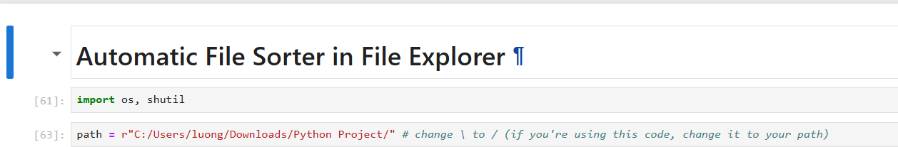
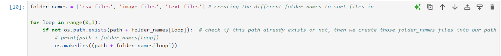
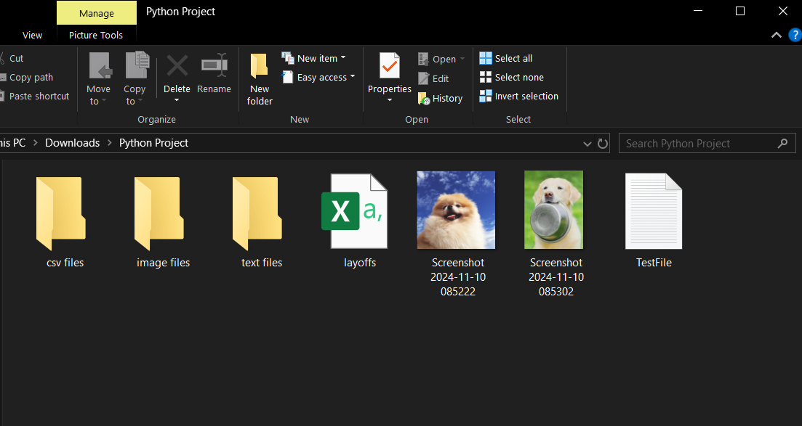
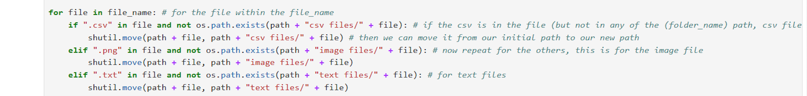
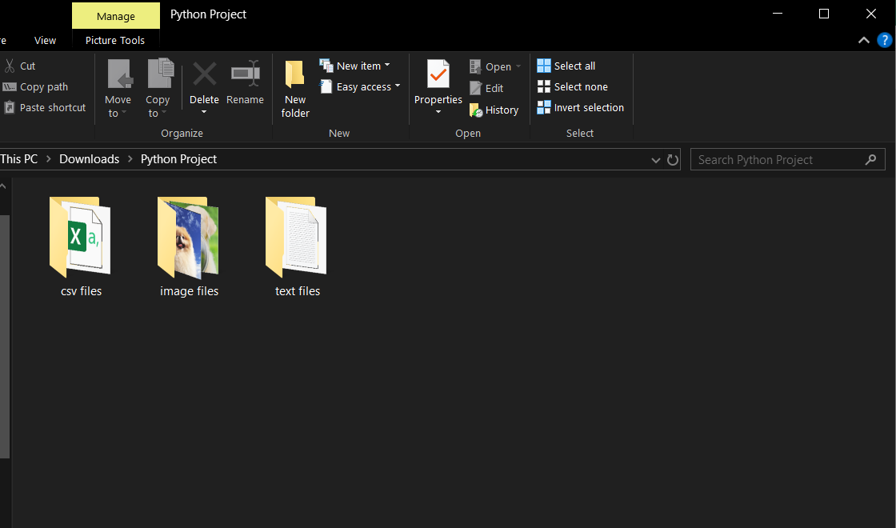

This project includes a Python script to automatically organize files into folders based on their type. Below you can find the Jupyter notebook and Github Repository for the full Python Script associated with this project. My GitHub page for all of my projects is: https://github.com/nhuxhuynh
In this project, I developed a Python Automatic File Sorter File Explorer script on Jupyter Notebook. My goal was to enhance productivity by sorting and organizing files into it specific subfolders based on it's file type (images, text, and csv) in the specific path. The `os` module navigates and receive the file information and `shutil` moves files to their corresponding folder. The `path` is use to adapt to different directories and indicates what file path we're working on.
The file_name = os.listdir(path) retrieve all files inside of the directory that is specified by path from the python script above. These files that are later going to be sorted into subfolders.
The folder_names (Folder names for each file type) are created and define as `csv files`, `image files`, and `text files'. Then the python script for `for loop` is used to check if each (sub) folder already exists in that specified path and if it doesn't exist ('if not') then we can create the folder names using the os.makedirs() function.
Below is the result and the (sub) folders are now created in the path (inside of the Python Project Folder). There's 3 subfolders of the Python Project Folder created: csv files, images files, text files, and the files next to the subfolders are going to be use to test if the script works in the upcoming steps.
The script below iterates through each file in the directory and determines the type of file that it is. If the file is not in it's target/coordinated folder, then shutil.move() will move the file to it's coordinated folder based of the file type inside of that directory path.
Below you can see that the files successfully gets sorted into its respective folder based on its file type! This python script demonstrates that this can be used for real-world tasks like automation and data management, which is super helpful to efficiently organized large numbers of files within seconds to reduce manual effort and increase file accessibility. Thank you for viewing my Python Automation File Project! :) (The FULL Python Script is in my Github or Click on the Link in "View Files:" section above)
